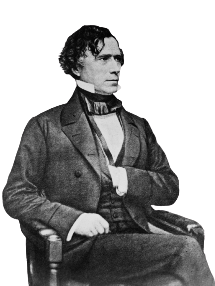

PeopleFirst Coalition

At the heart of the ProgressUnity Party lies a bold vision for a
thriving society that places people and planet at the center of all
decisions. We envision a future where unity, progress, and
sustainability coexist harmoniously, fostering a society that is
just, inclusive, and prosperous for all.
-Elena Ramos

Barack Obama
Welcome to our political party's website, where we proudly acknowledge Barack Obama as a remarkable leader who has left an indelible mark on our nation. Throughout his tenure as the 44th President of the United States, Obama displayed an unwavering commitment to unity, progress, and compassion. His visionary policies, such as the Affordable Care Act, expanded access to healthcare for millions, emphasizing the value of a healthier and more equitable society. Under his leadership, the nation made significant strides towards combatting climate change through initiatives like the Clean Power Plan, reinforcing America's dedication to a sustainable future. Furthermore, Obama's diplomacy fostered international cooperation, restoring America's standing on the global stage. His eloquence and inclusive rhetoric continue to inspire a generation, reminding us of the strength in diversity and the importance of forward-thinking leadership.
- Barack Obama
Our Journey
From our foundational principles to electoral successes, PeopleFirst Coalition has consistently championed justice, equality, and progress. With an unwavering commitment to community engagement, transparent governance, and innovative policies, our journey embodies the spirit of unity and resilience. As we navigate challenges and celebrate victories, our vision for a brighter future remains stronger than ever. Join us in shaping a nation that thrives on democracy, inclusivity, and prosperity. Together, we forge ahead on this inspiring journey toward a better tomorrow.
PROMOTING
PEACE
CREATING
THE REPUBLIC
OUR ACHIEVEMENTS

COUNTRY AT 70
Country's key achievements under successive PeopleFirst Coalition goverment.
BUILDING AN EQUAL NATION
It is a pleasure to be with you this morning.
CREATING THE RUPUBLIC
The freedom movement was perhaps the greatest mass movement in world history.
BRINGING PROSPARITY
About fifty years ago, an Englishman came here and for the first time had the idea that something .
STRENTHENING NATION
"Secularism and democracy are the twin pillars of our State the very foundations of our society.
PROMOTING PEACE
This conference would have attracted attention in the normal course.
© 2022 PeopleFirst Coalition Committee. All Rights Reserved.
Terms & Conditions | Privacy Policy